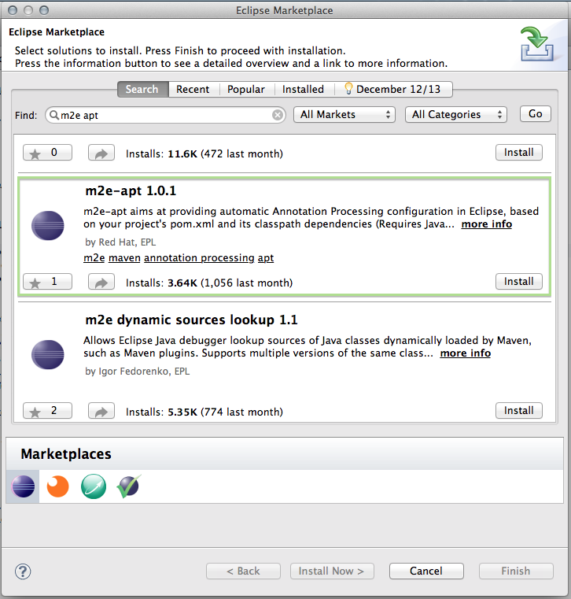

Overview
As of Java 6, annotation processing became a part of the standard Java compiler.
Java 7 or higher is required to run the Immutables annotation processor.
The Immutables annotation processor runs under any Java build tool that uses javac as the compiler backend
(assuming that annotation processing is not disabled in the build tool configuration).
The Eclipse JDT compiler (ECJ) also supports this annotation processor.
Nowadays, major IDEs support annotation processing almost out of the box. However, something usually has to be configured or quirks may exist that prevent the processor from functioning correctly.
The annotation processor that is to be plugged into a given IDE is built as single jar without external dependencies.
Eclipse
If you are using Maven, then m2e should configure annotation processing for you. However, for this to work, the m2e-apt connector should be installed first. Install it from the Eclipse marketplace.

Enable JDT/APT autoconfiguration from Maven dependencies globally or per project.

(Picture linked from developer.jboss.org)
After this, on each m2e Maven project import/update, annotation processors will be configured from the classpath.
Manual configuration tutorial
Here's a dialog configuration example to manually configure the annotation processor assuming that jar is already installed in the local Maven repository.
Enable annotation processing in the project settings, and then configure the factory path to point to the annotation processor jar.
In this example, this is achieved by extending the M2_REPO classpath variable defined by m2e. But otherwise you can add jars from other places.


Use the correct jar from M2_REPO:
IntelliJ IDEA
To configure annotation processing in IntelliJ IDEA, use dialog Preferences > Project Settings > Compiler > Annotation Processors.
Obtain annotation processors from the project classpath and specify output directories.

(Picture linked from restx.io documentation)
After you do this, classes will be generated on each project build. Generated sources will appear and will be visible to search, autocompletion, and so on.